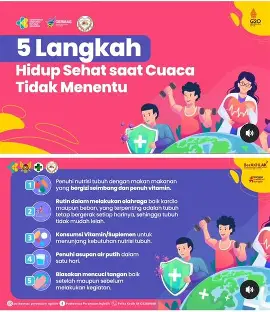
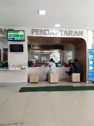

pelayanan rawat inap memberikan pelayanan intens selama berada di rumah sakit/p>

pada layanan rawat jalan ini pasien akan mendapatkan perawatan lebih lanjut sepulang dari rawat inap
![Layanan 1]()